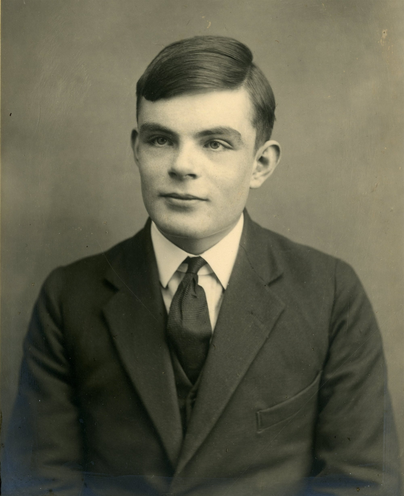

Alan Mathison Turing (1912-1954), destacado matemático, lógico y científico británico, es reconocido como el "padre de la informática". Durante la Segunda Guerra Mundial, lideró la descodificación de la máquina Enigma, acortando la guerra. Pionero en teoría de la computación, formuló el "Test de Turing" fundamental para la inteligencia artificial. Su legado, marcado por la lucha contra la discriminación por su homosexualidad, resuena como un hito clave en la historia de la ciencia de la computación.
Alan Turing: Padre de la Informática
Vida de Alan Turing
Alan Mathison Turing (1912-1954), destacado matemático y científico británico, es aclamado como el "padre de la informática". Nacido el 23 de junio de 1912 en Maida Vale, Londres, estudió en el King's College de la Universidad de Cambridge. Durante la Segunda Guerra Mundial, Turing fue arquitecto clave en Bletchley Park, donde lideró el equipo que descifró los códigos de la máquina Enigma alemana, contribuyendo significativamente a la victoria aliada. Su genialidad trascendió la criptografía; formuló el "Test de Turing", un hito en inteligencia artificial. La vida de Turing, marcada por su lucha contra la discriminación por su homosexualidad, subraya su impacto más allá de los avances científicos. Su legado, truncado a los 41 años, sigue siendo esencial en la historia de la ciencia de la computación.
Logros de Alan Turing

-
Máquina de Turing:
Concepto Fundamental: Desarrolló la máquina de Turing, un concepto crucial en la teoría de la computación, que sienta las bases para el diseño y funcionamiento de las computadoras modernas.
-
Colossus:
Computadora Electrónica Programable: Desempeñó un papel esencial en el desarrollo de Colossus, la primera computadora electrónica programable del mundo, marcando un hito en la evolución tecnológica.
-
Descifrado de Enigma:
Contribución a la Victoria Aliada: Lideró el equipo en Bletchley Park que descifró los códigos de la máquina Enigma alemana durante la Segunda Guerra Mundial, una contribución crucial para la victoria aliada.
-
Test de Turing:
Hitos en Inteligencia Artificial: Formuló el "Test de Turing", un pionero en la evaluación de la inteligencia artificial, influyendo en el desarrollo de sistemas inteligentes y máquinas que imitan el pensamiento humano.
Estos inventos destacan la genialidad de Alan Turing, desde sus contribuciones fundamentales en la teoría de la computación hasta su papel central en el avance de la tecnología con la creación de la primera computadora electrónica programable.